大家好，我是苍何。
前两个月，我和朋友们开源了《WorkBuddy 蓝皮书》，教大家从 0 到 1 学习 WorkBuddy。
发出来以后，收获了 Buddy 们的一致好评。
WorkBuddy 官方还转发了，我开心的像一只小兔子。
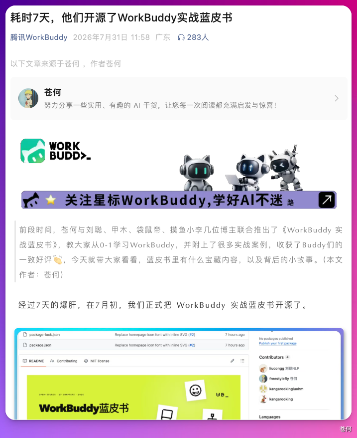
不少朋友教程上手实操，能帮助到大家，我们还挺开心的。
以及全网收到了很多的自发传播，一下子就🔥了。
目前，《WorkBuddy 蓝皮书》日均浏览量已经超过 5 万，累计浏览量达到 280.37 万。
GitHub 开源地址 github.com/AlephAITech/WorkBuddyGuide
在线阅读 workbuddy.homes
最近，我看 WorkBuddy 又上线了官方飞书连接器，连接飞书也更方便了。
接入后，它能读取群聊、知识库、日程和多维表格，还能继续建文档、约会议、发通知、做 PPT。
所以这次我又完整进行了深度体验后，给大家分享 8 个可以直接照抄的实战场景。也会第一时间同步到《WorkBuddy 蓝皮书》。
可以毫不夸张的说是保姆级了，篇幅有点长，建议狠狠点赞并转发收藏。
WorkBuddy 连接飞书，5 步就能搞定
先介绍下怎么把 WorkBuddy 快速的连接上飞书。
第一步，打开连接器。
打开 WorkBuddy，在左侧列表中找到「专家技能连接器」。
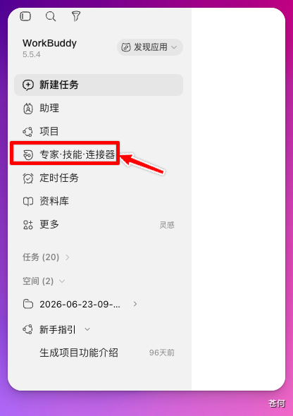
第二步，找到飞书连接器。
在连接器中找到「飞书」，点击右上角的「+」。
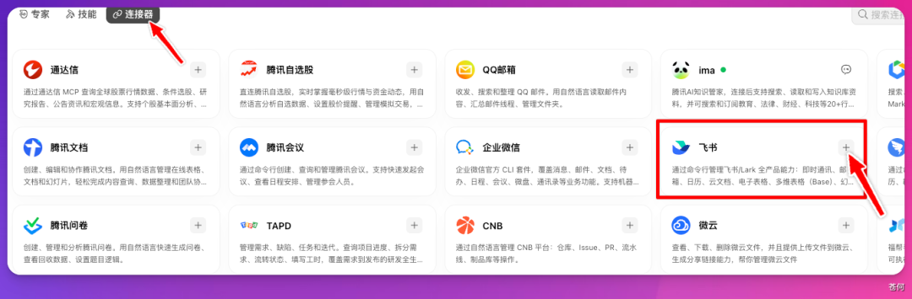
第三步，创建飞书应用。
页面会跳转到飞书开放平台，按照页面提示输入应用名称，然后点击创建。
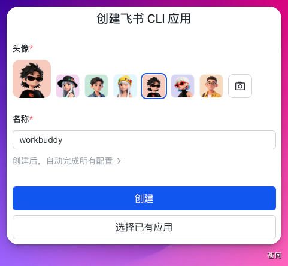
第四步，开通并授权。
点击「开通并授权应用」，按照页面提示完成授权。
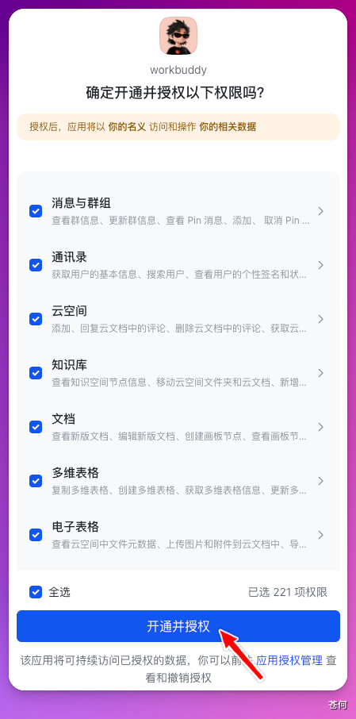
注意，WorkBuddy 只能在当前飞书账号已有权限的范围内读取和执行操作，具体可用能力也会受到企业管理员设置的影响。
第五步，在对话中启用连接器。
回到 WorkBuddy 对话框，点击左下角的「+」，找到连接器，打开飞书右侧的开关。
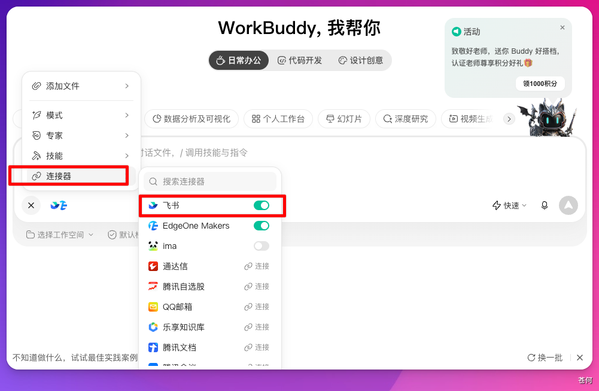
完成后，可以先用一句简单的指令测试。
提示词：在飞书群【产品周会】里用机器人发一条通知，明天 15:00 在 3 楼会议室开周会，请带上周的进展材料
如果在飞书群里可以收到 WorkBuddy 发送的消息，就说明连接成功了。
到这一步，你的 AI 同事算是正式拿到飞书的「上岗证」了。
接下来，直接让它干活。
几百条群消息，一句话总结重点
我最常用的第一个场景，就是汇总群聊重点消息。
我经常会加入大量用户反馈群，一天没看，未读消息就可能堆到几百条。
这时，我直接把群名和时间范围丢给 WorkBuddy。
提示词：读取下 ZCode 用户反馈群 III 官方最近一周的重点消息。
他会自己翻群聊，把重点内容整理成 HTML 文件。
官方发了什么、用户在聊什么、反馈走向如何，一眼就能看清。
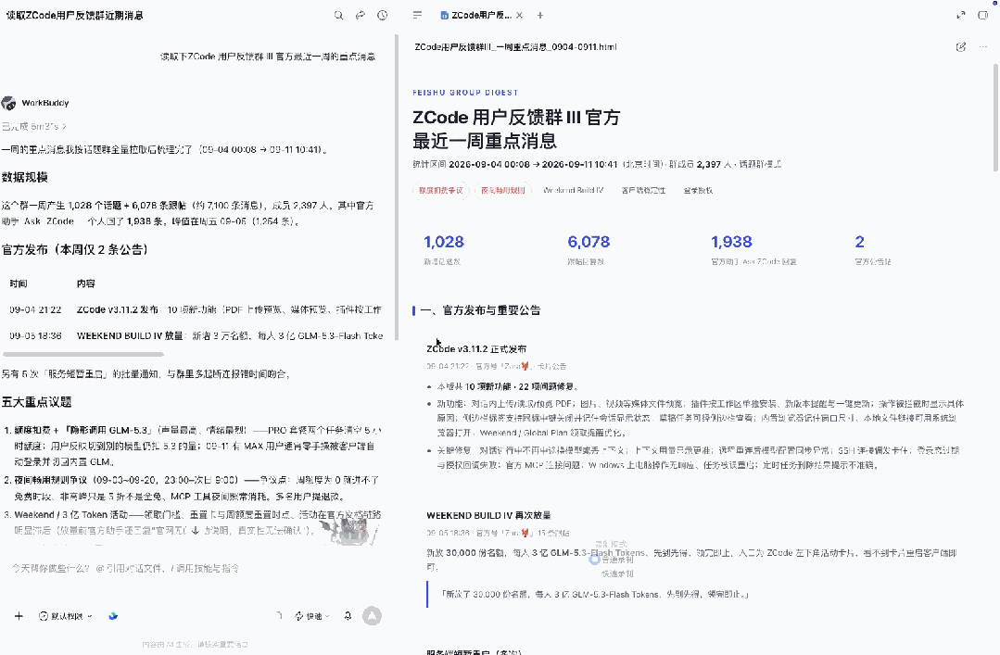
群聊看完了，再来处理一个打工人每周都逃不掉的东西。
读完飞书知识库，自动生成周报
我会让我自己的产品 WeSight 把每天的工作自动沉淀到飞书知识库，但日报积累多了以后，重新翻阅本身又成了一项工作。
所以我直接让 WorkBuddy 读取每日沉淀，整理本周主线、完成事项和可复用经验。
提示词：总结一下飞书知识库【每日知识沉淀】里的文档，看一下我这周使用 AI 做了什么。请按本周主线任务、完成事项和可复用经验三个部分输出。
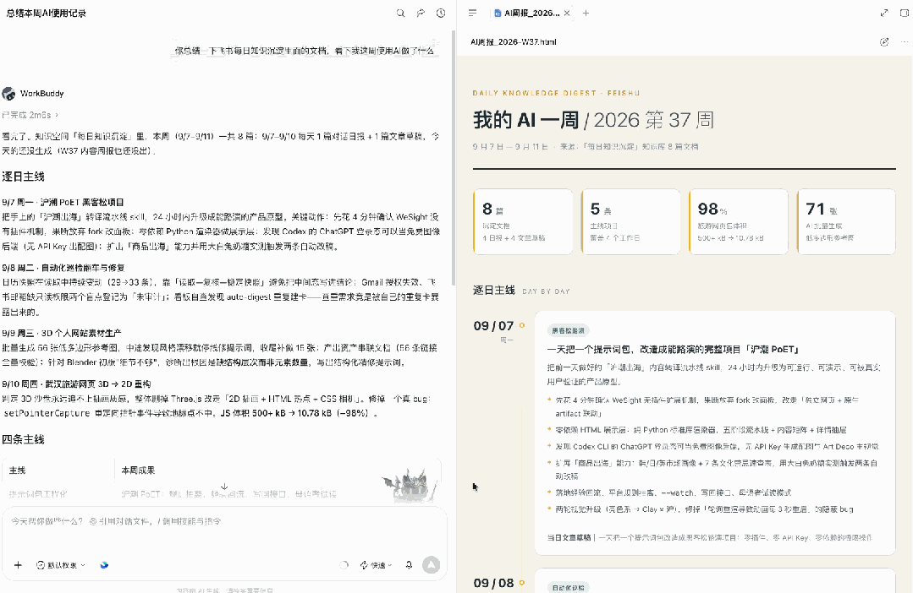
周报生成后，还可以让它继续发送到协作群。
提示词：把这个周报发到【产品运营协作群】，用卡片形式呈现，并附上完整周报链接。
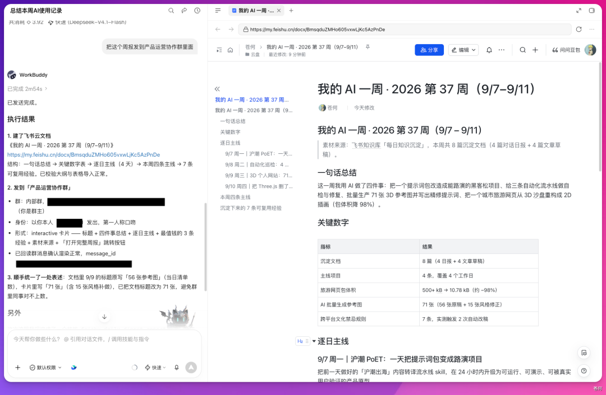
他会找到对应群聊，再把周报卡片发出去。
注意注意注意：实际发送身份，以当前连接器的授权方式和企业配置为准。内部群聊可以以本人身份发送，外部群聊只能以 WorkBuddy 身份发送。
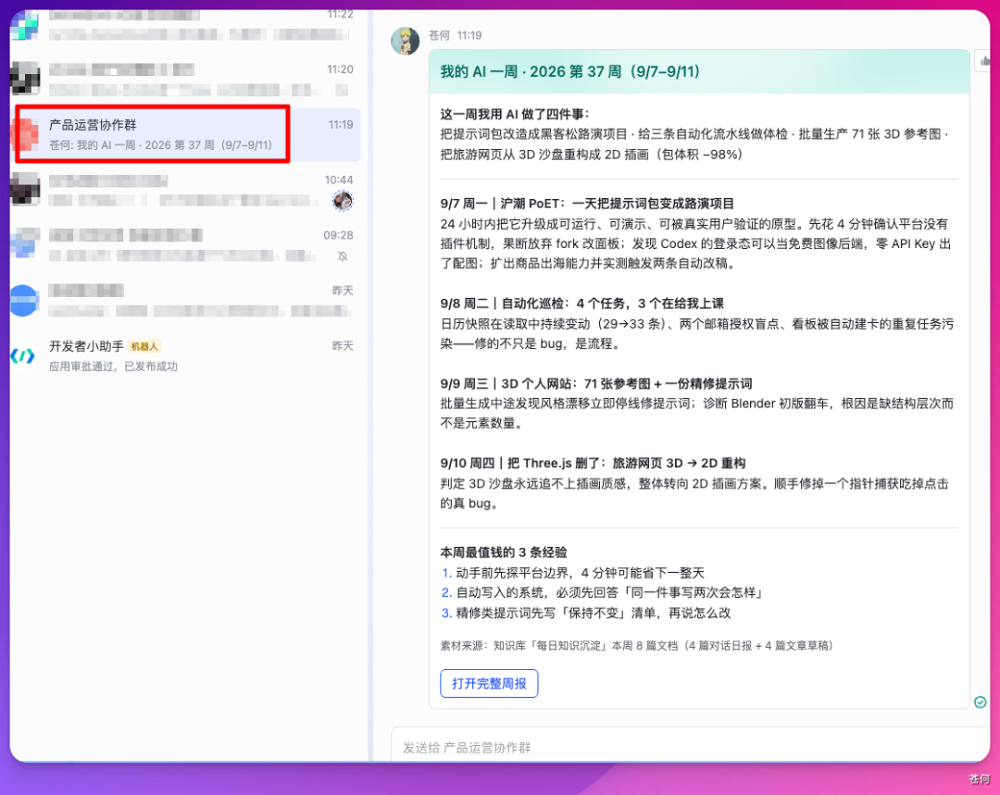
让机器人去外部群发通知
合作方、供应商和外部顾问经常都在一个外部群里。如果想让机器人代发通知，需要先开通外部群能力。
提示词：在飞书群【供应商对账群】里用机器人发一条通知，9 月对账单已上传到群文件，请各供应商在周五 18:00 前完成核对，并把盖章确认页拍照发回群里。
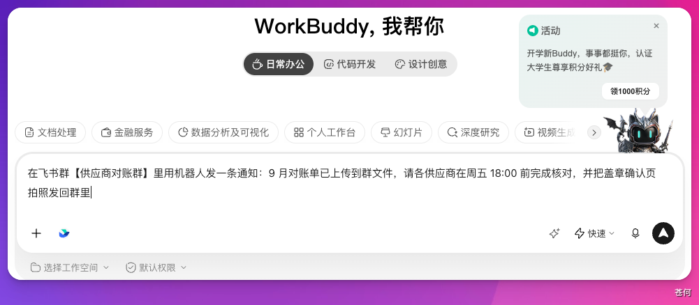
问题来了！！！
目标群如果是外部群，飞书会限制应用权限。这时要先去开放平台补一下配置。
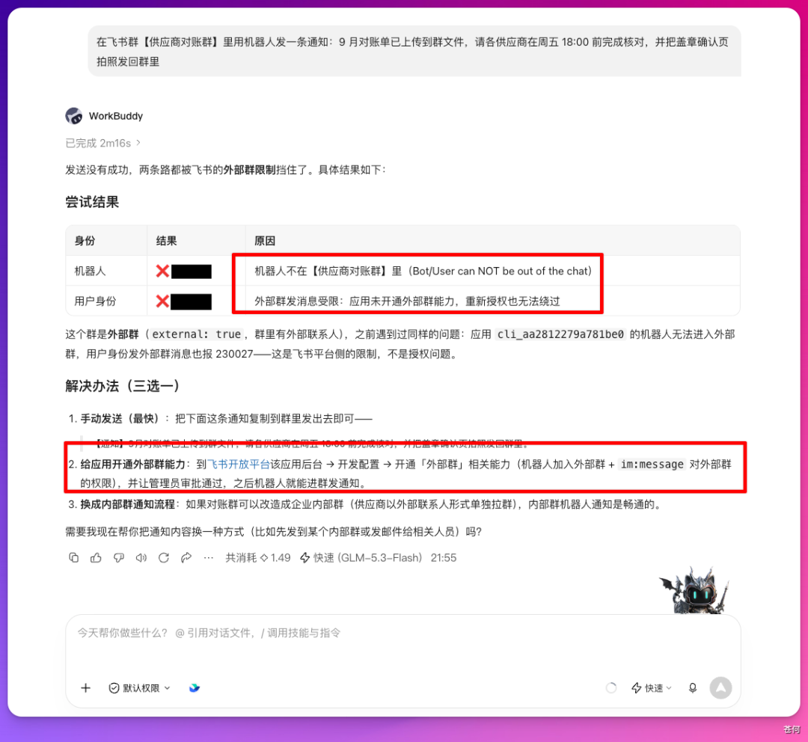
打开对应机器人的应用后台，点击「创建版本」。
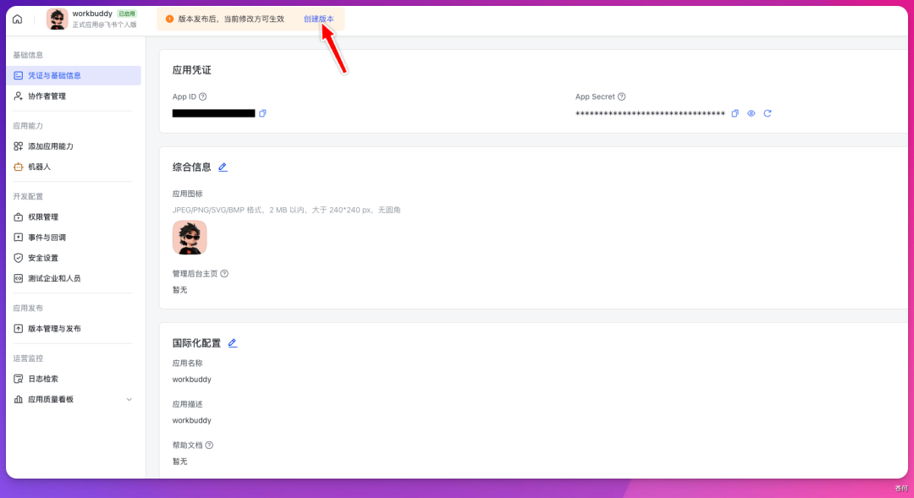
找到「对外共享」，勾选「允许机器人被添加到外部群聊中使用」，保存并按照飞书页面提示完成版本发布。
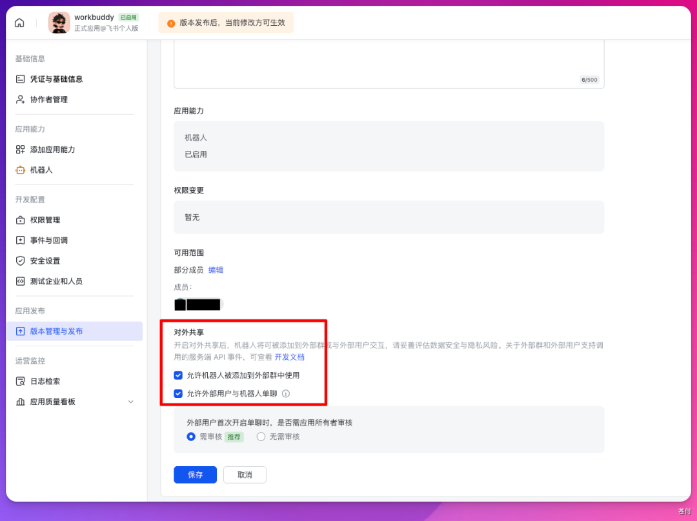
完成配置后，告诉 WorkBuddy 配置已经完成，WorkBuddy 会自动将机器人添加到目标外部群并发送消息。
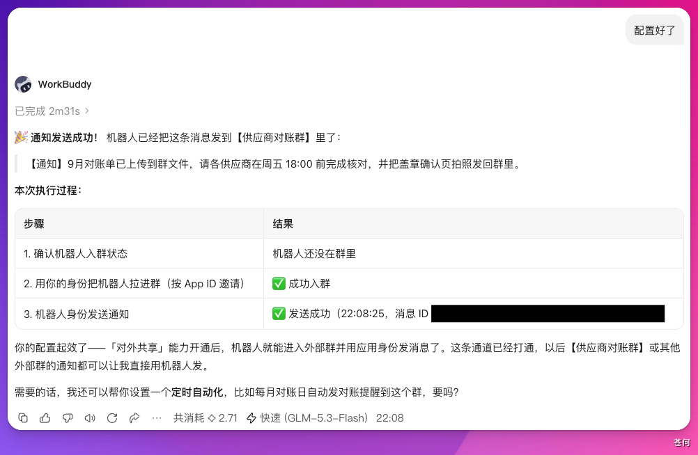
等待片刻，就能在对应群聊里看到通知。
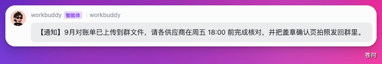
读取群聊和日程，自动预约会议
约团队会议最麻烦的，往往是找一个大家都有空的时间，再创建会议、发送链接和通知成员。
WorkBuddy 可以结合群聊和飞书日历，筛选合适时段，再创建会议并发群通知。
提示词：请帮我协调并预约一次 WeSight 产品交流群的产品讨论会议。
查看「WeSight产品交流群」近期聊天记录，找出成员提到过的空闲时间； 结合飞书日历，检查核心成员在 2026-09-14 至 2026-09-16 的日程； 选出大多数人都空闲的 1 小时时段，优先工作日下午，无需再向我确认； 在腾讯会议创建主题为「WeSight 产品讨论会」的会议； 将会议时间和链接发送到「WeSight产品交流群」； 完成后向我汇报最终会议时间和群通知内容。
发送需求后，WorkBuddy 会读取群聊和飞书日程，识别成员的空闲时段。
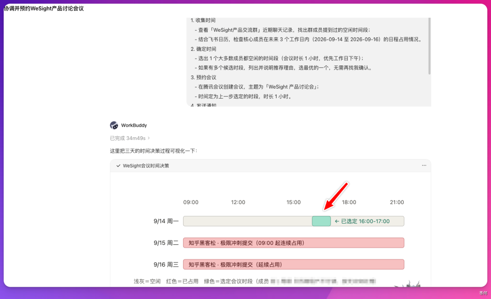
如果还没有接入腾讯会议，它会提示你通过授权链接连接相应的腾讯会议 CLI 能力。
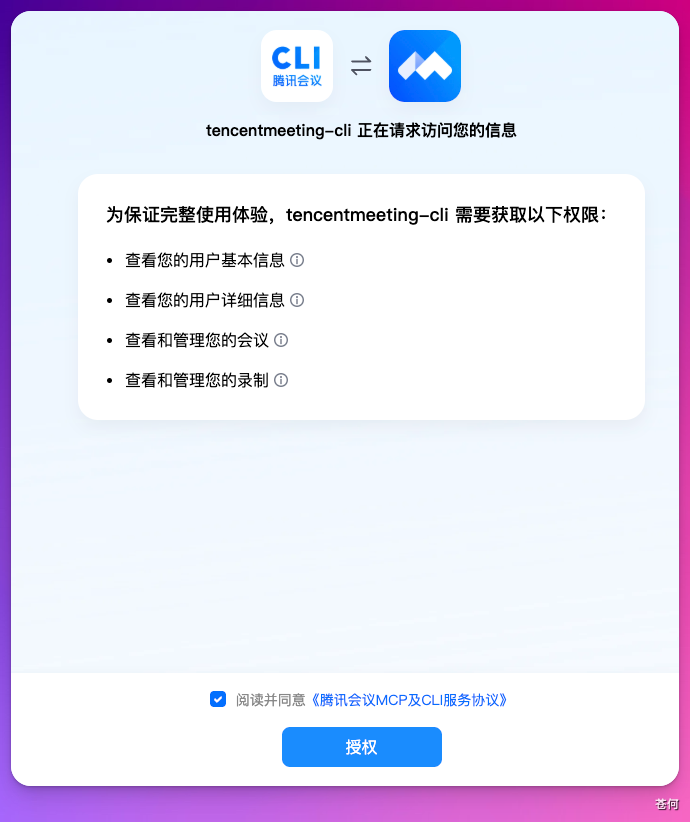
完成后，WorkBuddy 会汇报会议时间和链接，再把通知发到指定群聊。
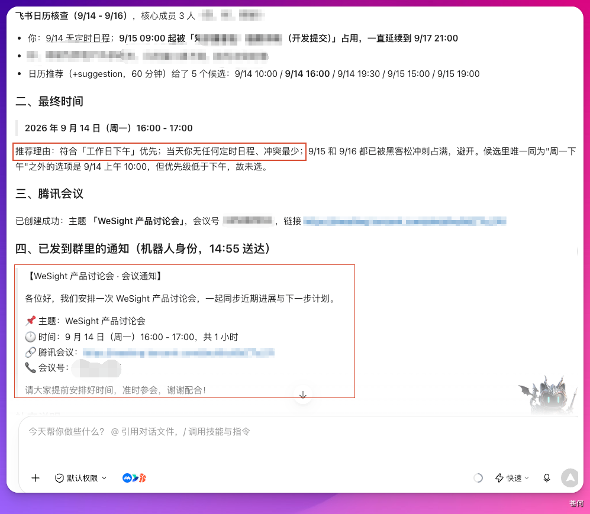
打开飞书，就能看到对应的会议通知。
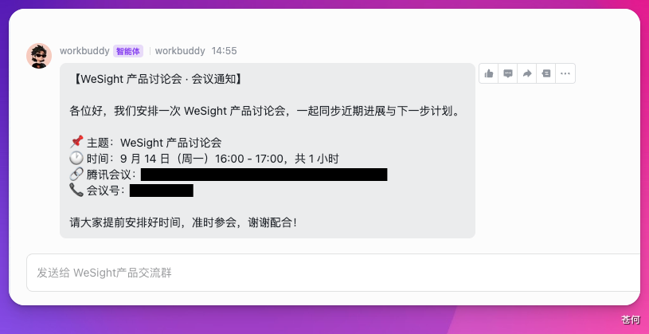
我觉得这个场景最有意思的地方，是他能把多个工具串起来。
飞书提供办公上下文，WorkBuddy 继续调用电脑上的工具，把整件事一路干完。
同样的思路，还可以用来做投放复盘 PPT。
读取多维表格，生成投放复盘 PPT
做投放复盘时，数据通常在飞书多维表格里，但最终汇报可能需要一份本地 PPT。
过去需要导出数据、计算指标、制作图表，再逐页写分析，太麻烦了。。。
提示词：读取飞书多维表格【投放数据】里本月的数据，按渠道汇总花费、曝光、点击和转化，计算各渠道 ROI 并找出异常波动（环比变化超过 20% 的），在我的电脑上生成一份复盘 PPT，包含数据图表、异常分析和下月优化建议。
WorkBuddy 会找到对应的多维表格，读取数据并完成分析，然后给出 4 个 PPT 方案。
选定方案后，它会继续在电脑上制作完整 PPT，下回领导让复盘汇报不用愁啦！！！
数据能复盘，飞书知识库里的培训资料当然也能安排。
下面这个场景，很适合要带新人的小伙伴。
读取运营手册，生成 7 天新人学习路径
新人入职后，培训资料往往散落在知识库的不同目录里。
负责人不仅要整理文档，还要安排每天学什么、怎么验收，想想就头痛啊。
提示词：下周有一位新运营入职，请读取飞书知识库【运营手册】下的所有文档，按「必读 / 选读 / 工具操作」分类，为她规划一份 7 天学习路径，从 2026-09-14（周一）开始。要求如下。
列出每天的学习主题、文档链接和检验方式； 先学必读，再学工具操作，最后学习选读内容，每天阅读量均衡； 整理成飞书云文档，标题为「新运营 7 天 onboarding 学习路径」，保存到【新人培训】文件夹。
这条提示词看着很长，其实结构很简单。
只需要告诉WorkBuddy读取什么、怎么处理、交付到哪里，它就GET到你的点啦。
接下来这个案例，是我自己用得比较爽的一个。
做完 GEO 诊断，自动拆成整改任务
我在 WorkBuddy 中发布的「品牌 GEO 可见度诊断师」，可以对你的品牌完成基建评估、AI 收录检查、竞品对标，并输出 AIVO 评分报告。
现在已经有 9.91 万次使用啦，撒花撒花。
以前做完诊断报告，活才干了一半，后面还要归档、拆任务、分负责人、建日程、催进度，想想都头大。
接上飞书后，我直接让 WorkBuddy 把后续工作一起干了。
提示词：请调用 GEO 诊断技能，对品牌【WeSight】做一次完整 GEO 可见度诊断，然后做这几件事。
将 AIVO 评分报告保存为飞书云文档「WeSight GEO 诊断报告-202609」，放入【品牌监测】文件夹； 将问题按「内容缺失 / 平台未收录 / 官网基建 / 口碑舆情」分类，逐条写入多维表格【GEO 整改任务】，补充状态、建议负责人、优先级和修改建议； 为高优先级问题创建本周五 17:00 的检查日程； 将总分、3 个最严重的问题和整改任务表链接发到【WeSight产品交流群】； 完成后汇报诊断总分、入表问题数量和日程数。
执行结束后，WorkBuddy 会把诊断结果同步到飞书，并建立整改任务表。
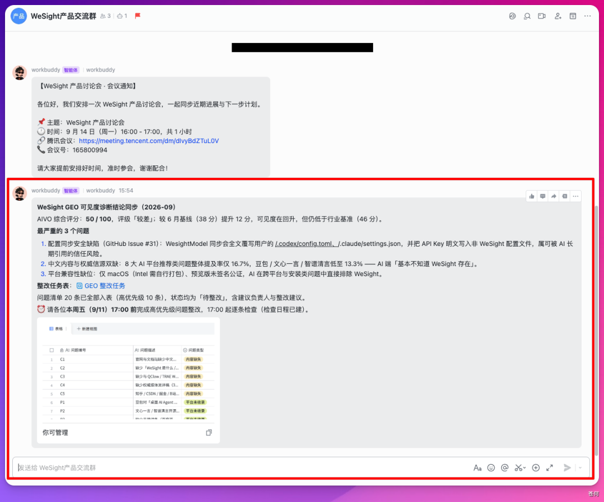
打开任务表，可以看到任务编号、问题描述、问题类型、状态、建议负责人和修改建议。
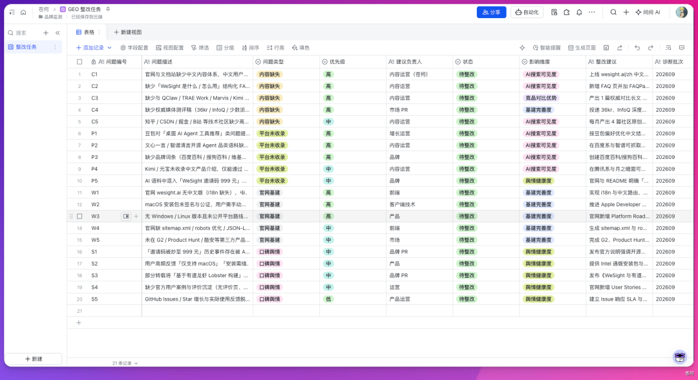
他还会按照提示词创建检查日程。
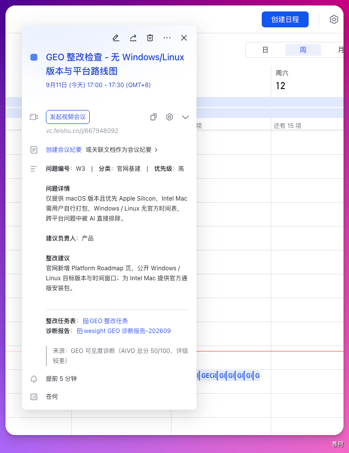
临近时间时，就能收到日历助手的提醒，P人不怕忘事了哈哈哈
抓热点、建选题库，再生成复盘 PPT
我们做自媒体最怕的就是热点发现得太晚，有时候明明刷到了，最后也没来得及变成选题。
我干脆把找热点、写选题库、做复盘、生成 PPT 和同步团队，全丢给了 WorkBuddy。
提示词：完成本周的热点运营工作。
调用抖音实时热点榜技能获取 Top30 热点，结合 AI 工具 / AI 模型行业筛选适合借势的选题； 去重后写入飞书多维表格【选题排期】，补充热度、借势角度、发布形式、时效等级，状态填「待评估」； 读取【内容数据表】本周数据，分析蹭到的热点、还来得及跟的热点，以及本周错过但本该做的 3 个热点； 在电脑上生成「热点周度复盘-第37周」PPT，保存到【周会材料】文件夹； 将复盘核心结论发送到【内容组】，提醒大家在周五会前看完 PPT； 最后汇报新入库数量、PPT 位置和群消息发送结果。
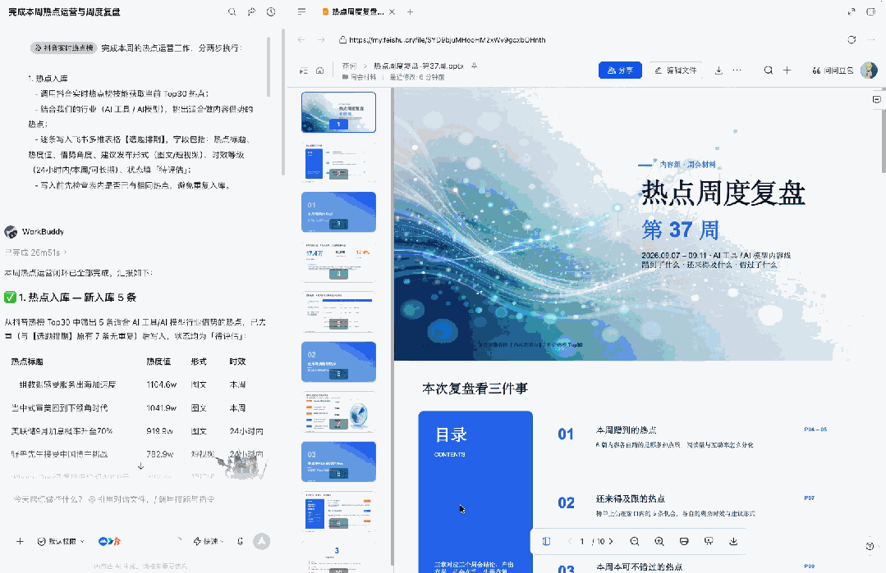
WorkBuddy 会把筛选后的热点写进多维表格，并补充借势角度、发布形式和时效等级。
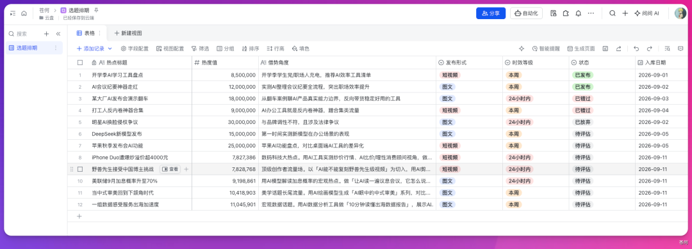
复盘完成后，他还会把核心结论同步到指定群聊。
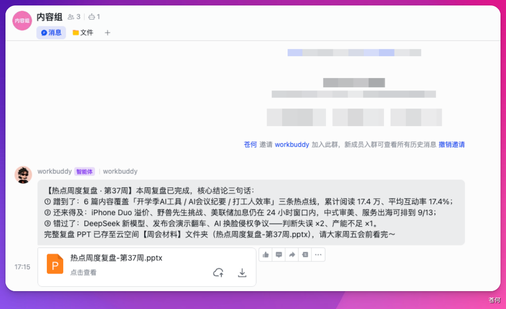
写在最后
WorkBuddy 能读懂飞书里的工作上下文，不用反复解释背景，一句话就能接着干活。
而且，它能连接的工具还有很多。除了飞书，也支持企微、钉钉等办公生态。
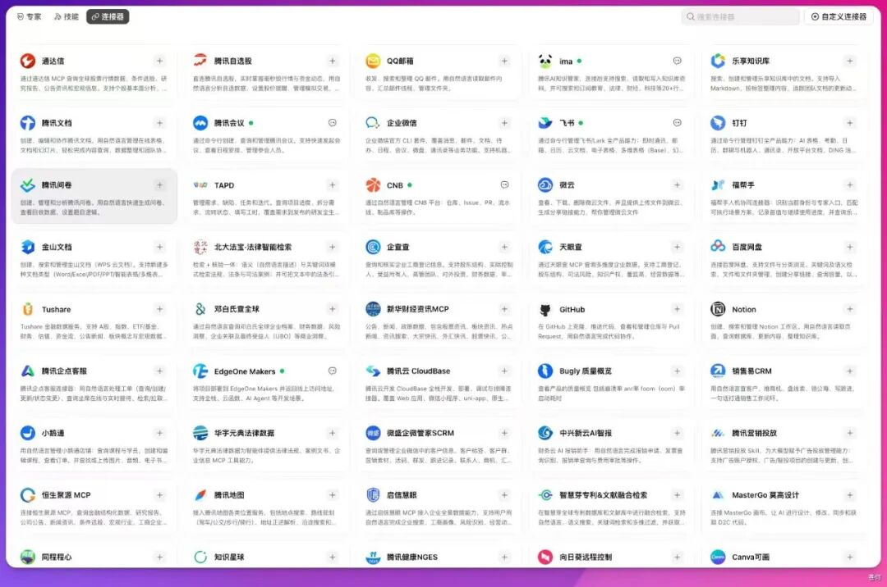
模型方面，WorkBuddy 支持多模型和自定义模型，整体操作也很简单，小白也能轻松上手。
现在我看到说Hy4 preview 可以免费体验 2 周，Hy3 免费至 9 月底。
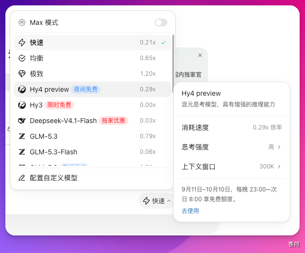
看到这里的小伙伴快跟着教程操作一遍吧，不要让文章放到收藏夹吃灰，动起来gogogo！！！
你最想让 WorkBuddy 帮你处理哪一项飞书工作？欢迎在评论区一起唠唠。